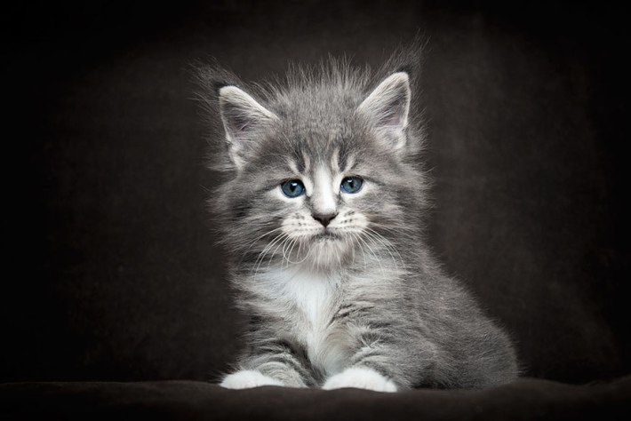
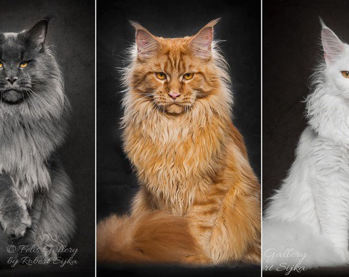
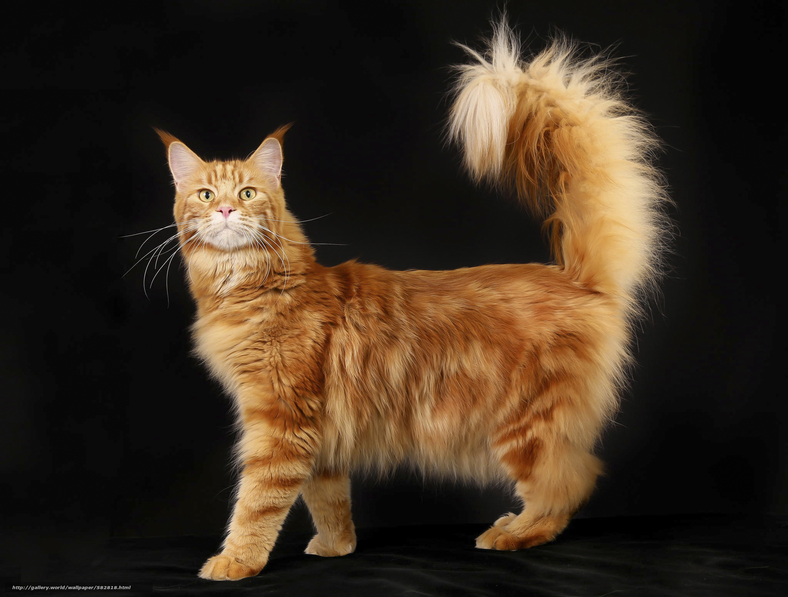
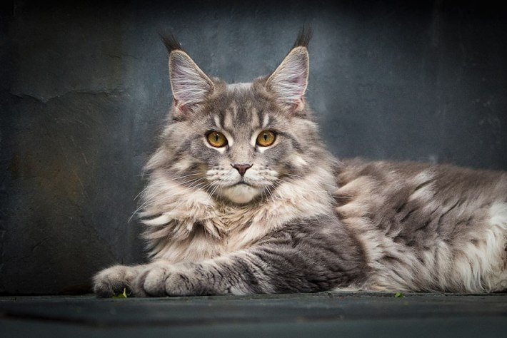

Якщо Ви маєте думку придбати кошеня мейн кун (Львів), то запрошуємо Вас оцінити світлини кошенят від елітних виробників нашого розплідника. Наявність титулів і високі виставкові оцінки доводять відмінні породні якості котів і кішок, які беруть участь у розведенні. Усі наші кошенята мають родовід, детально розписаний до 4-го коліна, що дуже важливо для передбачення характеру і зовнішності Вашого майбутнього улюбленця. Під час вибору чотириногого члена сім'ї Ви неодмінно звернете увагу на вартість котиків, а також на те, що вона може відрізнятися для різних кошенят мейн куна (Львів).
Із чого складається вартість кошенят
Ціна мейн кунів (Львів) може відрізнятися в залежності від їх породних якостей.
Заводчики поділяють кошенят на шоу, брід і пет класи. У чому їх відмінності? Давайте визначимося. Якщо Вас цікавить
кар'єра Вашого вихованця, якщо Ви плануєте возити його на виставки і заробляти титули, то однозначно потрібно вибрати кошеня класу шоу або брід. Ці тварини повністю відповідають окресленим щодо породи вимогам, відзначаються ідеальним забарвленням,
кістяком, мають типовий для котів мейн кун (Львів) характер.
Купувати тварин брід і шоу класу необхідно також, якщо планується їх подальше розведення. Причому коти мають неодмінно належати до класу шоу, а от кішки мейн кун (Львів) допускаються до розведення, навіть якщо вони належать до брід класу. Таку розбіжність вимог обумовлено специфікою котів і кішок. Кіт може бути пов'язаний із великою кількістю кішок, тому так важливо, щоб його генотип був ідеальним. Шоу (SHOW) мейн кун – це «зірки» породи, які завжди демонструють найвищі результати на виставках і легко заслуговують титули. Брід (BREED) клас включає тварин з ідеальною породною лінією, але без особливостей, які вигідно виділяли б їх серед інших представників породи.
   Наша стрінка на Facebook
Наша стрінка на Facebook
 Наша стрінка на Instagram
Наша стрінка на Instagram
©Apollo_pride 2019.Всі права захищені.